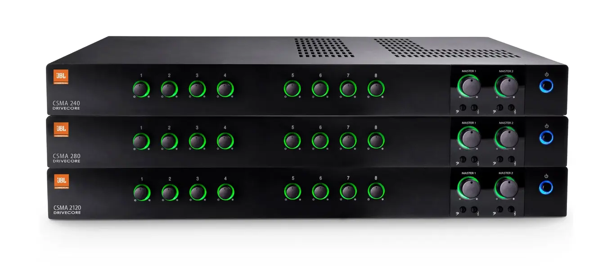
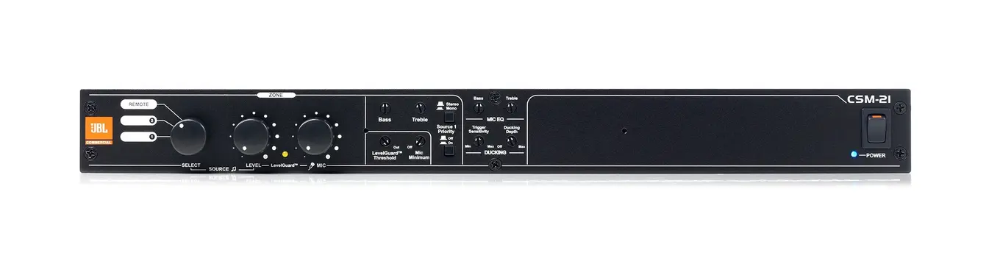
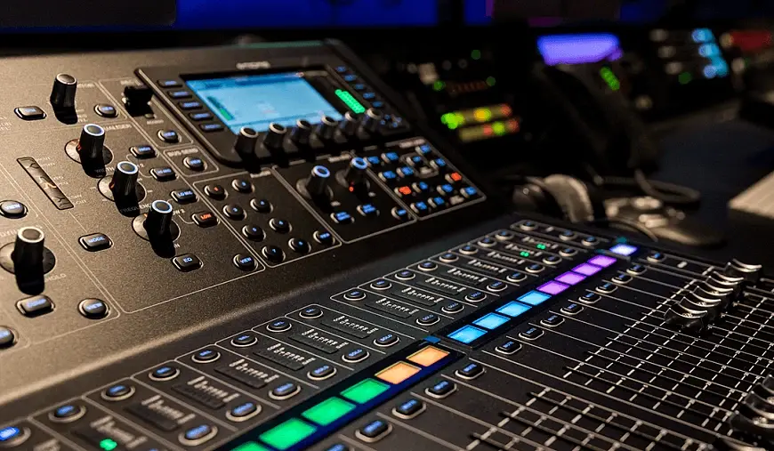
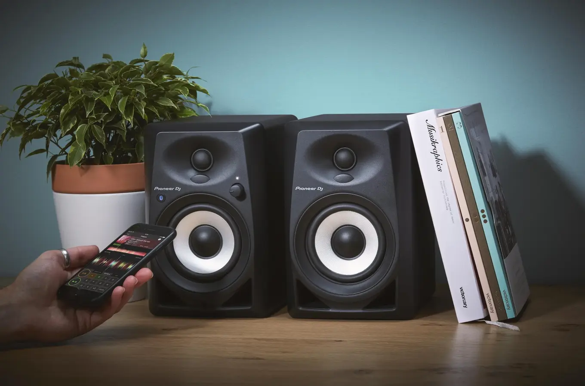
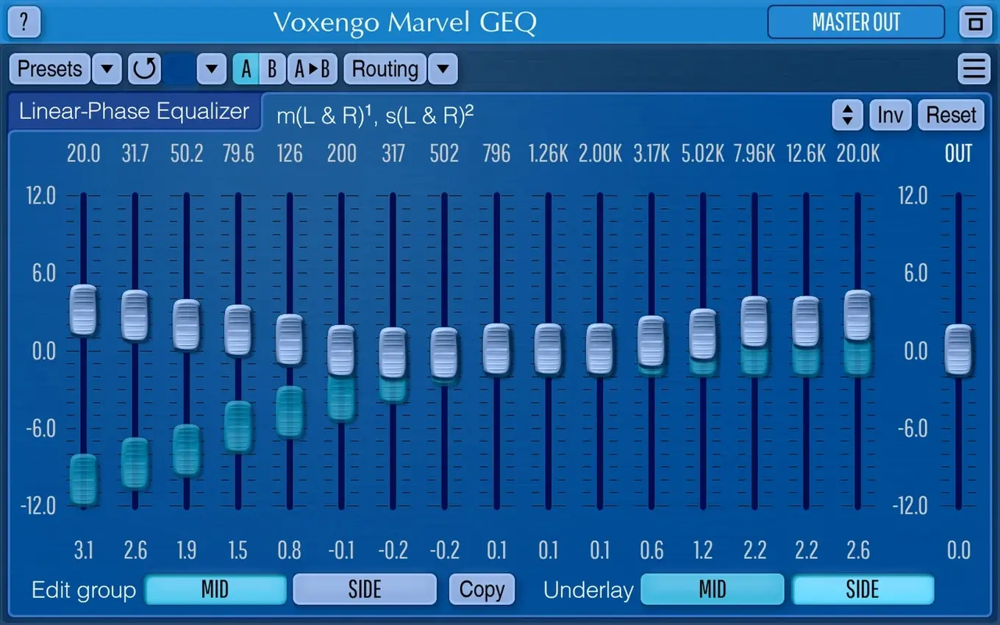

Акустические системы

Задачей акустических систем является преобразование электрического сигнала в звуковые волны, попросту воспроизведение звука. Акустические системы различаются по типу подключения и в зависимости от способа передачи сигнала их можно разделить на: Трансформаторные Низкоомные По конструктивному исполнению акустические системы подразделяются: Корпусные Встраиваемые По назначению акустические системы разделяются на: Концернтные Ландшафтные Компьютерные Студийные Для домашнего кинотеатра Автомобильные Public adress system
Усилитель мощности

Усилитель мощности отвечает за усиление звукового сигнала до уровня необходимой громкости. Различают усилители по классу усиления и выходной мощности. Отличия заключаются в принципе работы усилительных каскадов устройства и внутренней схемотехнике. В последнее время наибольшее распространение получили усилители класса D (Digital). Они отличаются высоким КПД, компактными размерами и высокой выходной мощностью при минимальном выделении тепла. По конструктивному исполнению усилители подразделяются на рэковые и настольные. В настольном исполнении обычно производятся устройства для бытового применения (Hi-fi).
Предусилитель-Процессор

Современные предусилители используются для коммутации и обработки входного звукового сигнала от подключенных к нему звуковых источников (dvd, cd, bluray проигрыватель, медиаплеер, аудиоконференц-система и так далее) до единого линейного уровня. Так же важнейшей функцией предусилителя является возможность регулировки громкости. Различают предусилители по типу их назначения. В зависимости от предназначения предусилителя меняется и его название. В бытовом применении он встречается под названием "ресивер", в концертном - "микшер", а в профессиональном сегменте - "матричный коммутатор". В зависимости от типа предусилителя меняются и его функциональные возможности.
Конференц-системы
Конференц-системы (дискуссионные системы, конгресс-системы) – это комплекс оборудования, состоящий из центрального блока и набора специализированных микрофонов, который предназначен для усиления речи участников на мероприятии. Почему система и чем это отличается от обычного набора вокальных микрофонов? Всё очень просто. Во-первых, микрофоны цифровые, соединённые последовательно друг с другом, передают информацию на центральный блок. Во-вторых, благодаря цифровой передаче данных, они обладают значительно большей функциональностью, например, голосованием, приоритетом выставления очередей, распределением полномочий между делегатом и председателем и многое другое.
Микрофоны
Устройства, захватывающие звук и передающие его в виде сигнала на предусилитель с целью дальнейшего воспроизведения громкоговорителями. Микрофоны бывают проводные и беспроводные, причем второй вариант сегодня превалирует. Также микрофоны делятся на направленные и ненаправленные, что определяется конструкцией звукоулавливающей системы микрофона. Ненаправленные (или омни-направленные) микрофоны чувствительны к звуку во всех направлениях. Такие могут применяться, например, за круглым столом во время конференции. Двунаправленные микрофоны «ловят» звук спереди и сзади вдоль оси микрофона.
Микшерный пульт

Микшер осуществляет сведение нескольких звуковых каналов (например, инструментов музыкальной группы и вокала) в один. Микшеры применяются в студиях звукозаписи, на концертах, при трансляции, в развлекательных заведениях и т.д. Существуют аналоговые и цифровые микшеры. Цифровые, в свою очередь, подразделяются на аппаратные и программные. Ключевая характеристика микшера – это число одновременно обрабатываемых каналов звука, варьирующееся от 4 в самых простых решениях до 96 в профессиональных студийных микшерах. Многие профессиональные микшеры имеют встроенные средства автоматизации, например, фейдинга или наложения эффектов.
Диджейский пульт
DJ-пульты являются разновидностью микшерных пультов. Они предназначены для сведения музыкальных композиций и наложения эффектов. DJ-пульты существенно проще микшеров, число входных каналов в них редко превышает четыре. При этом они имеют ряд уникальных функций. Так, к диджейскому пульту можно подключить наушники, чтобы диджей мог выбрать нужный фрагмент композиции в неиграющем источнике сигнала, а затем переключить каналы.
Сценические и студийные мониторы

Два особых вида громкоговорителей, использующиеся в профессиональной музыкальной среде. Первые дают исполнителю возможность ориентироваться в звуке, а вторые формируют максимально «честный» звук.
Эквалайзер и другие устройства для обработки звука

С помощью эквалайзера можно выборочно корректировать амплитуду определенных частотных составляющих звука, добиваясь того или иного звучания. Эквалайзеры бывают графические и параметрические, аппаратные и программные. Графические эквалайзеры позволяют задать амплитуду частотной полосы сигнала, причем число таких полос фиксировано. Параметрические же позволяют задать базовую частоту, добротность и коэффициент усиления сигнала по отдельности, что дает намного более широкие возможности регулировки. Часто функции эквалайзера берет на себя микшерный пульт.